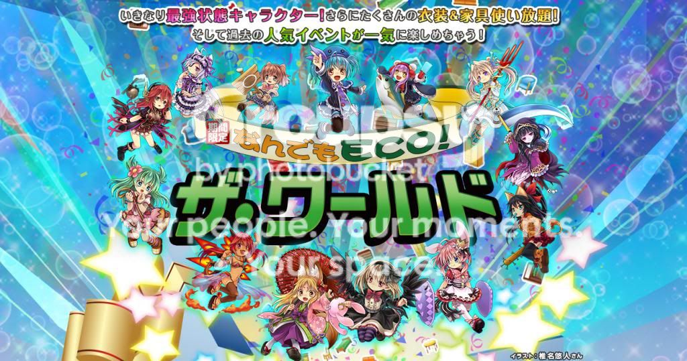
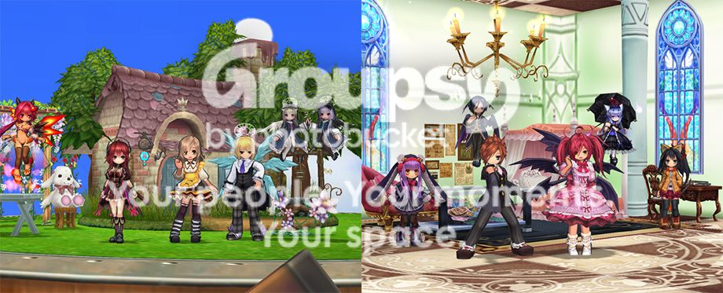
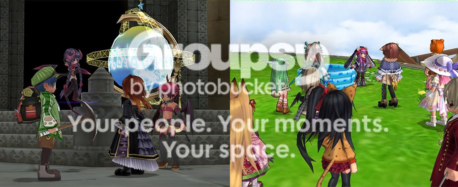
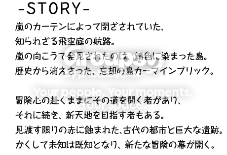

เพราะตอนนี้ยังฝึกหนอนน้อยอยู่เลย ยังไม่ซิ่งซะที

http://eco.froztic.in.th/archive/ecofanclub/
http://eco.froztic.in.th/archive/ecofanclub/viewtopic.php?f=2&t=82695
homin เขียน:ประบระบบสัตว์เลี้ยงใหม่? ยังไงเน้อ
เพราะตอนนี้ยังฝึกหนอนน้อยอยู่เลย ยังไม่ซิ่งซะที
Mrgataring เขียน:ปรับให้เห็นสเตตัสซ่อน (ที่สร้างความลำบากเวลาฝึกเพ็ท) และค่าไหนฝึกเต็มแล้วตัวเลขจะเปลี่ยนสี ทำให้รู้ว่าเต็มแล้วครับ
แล้วก็จะเพิ่ม NPC สำหรับวาปไปแมปฝึกเพ็ทมาไว้แถวๆ อโครเนียเพื่อความสะดวกอีกด้วย








